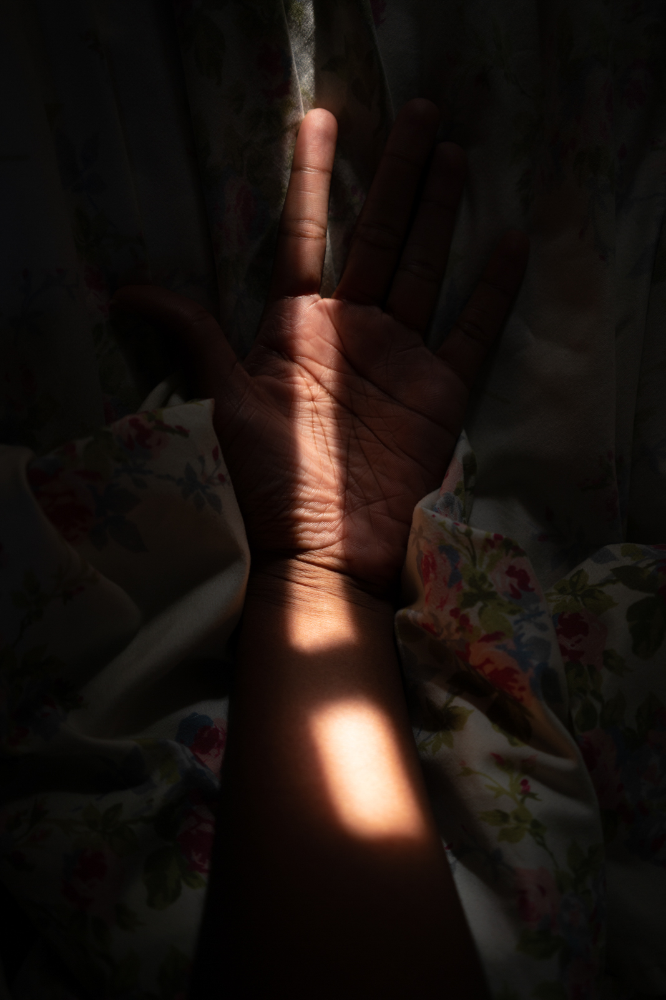
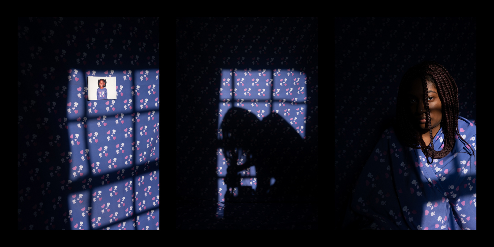
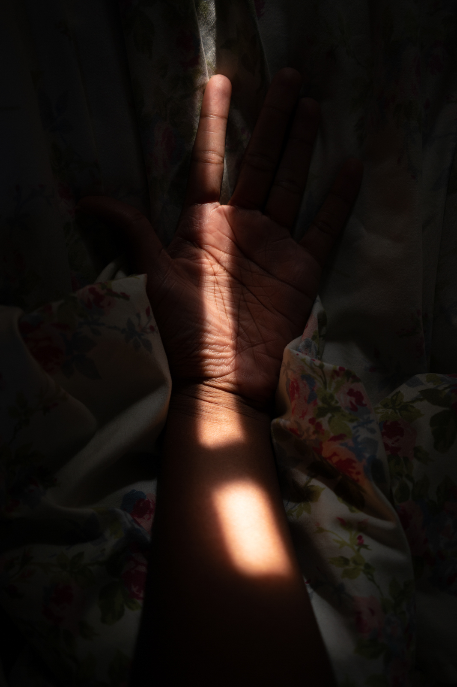
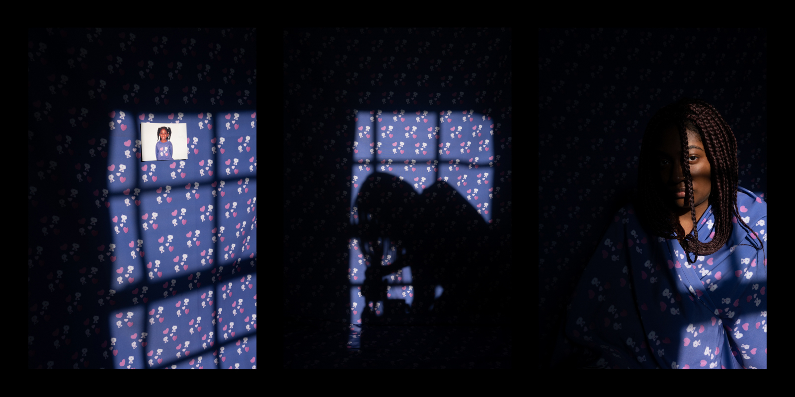
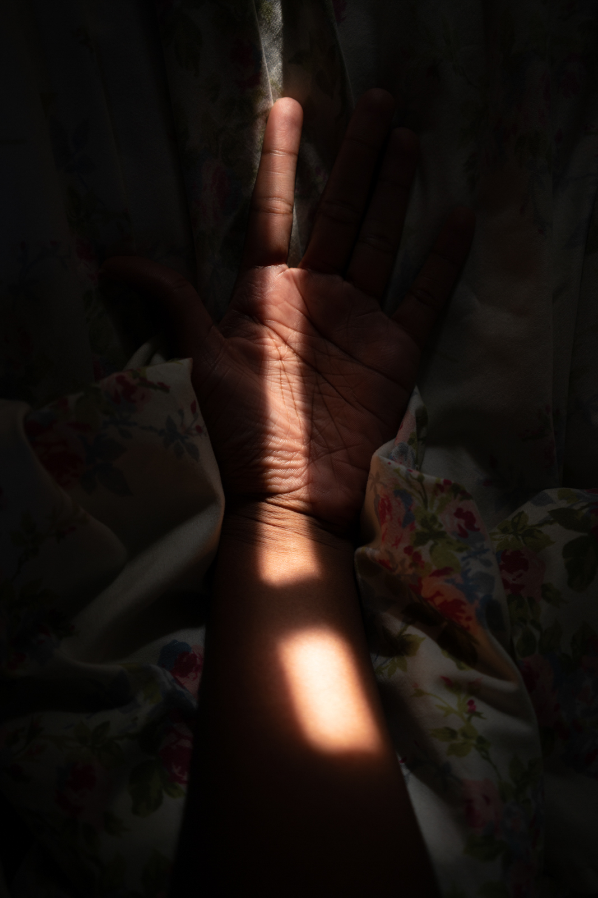
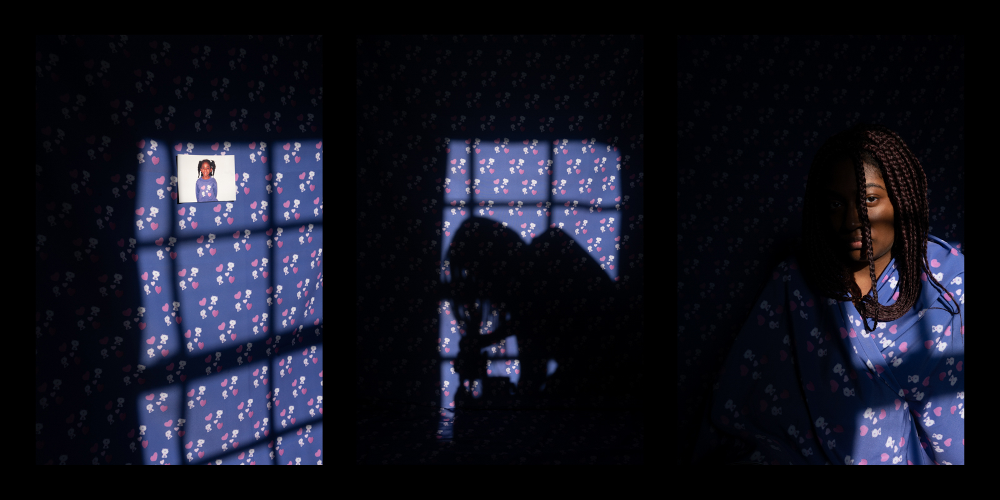
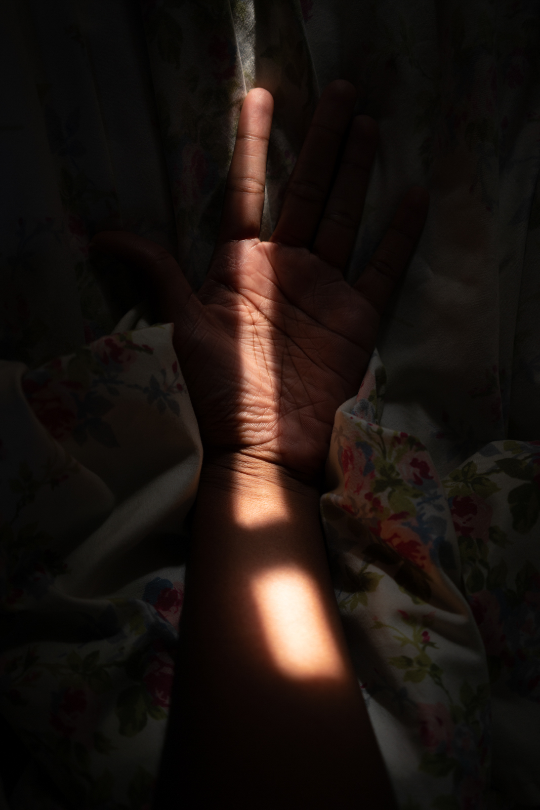
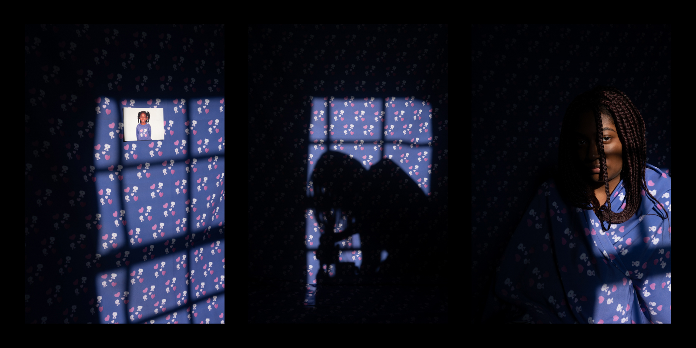

biography
Vanessa Leroy (she/her, b. 1996) is a photographer from Waltham, Massachusetts. There isn’t a lot of space for dreaming in an oppressive world, so she uses photography as a tool to create worlds where she freely navigates the various facets of her life experience and identity as a black woman. In her senior thesis project "as our bodies lift up slowly,", she weaves the viewer between the past and present through archival family photographs, text, digital and physical photographic collages, environmental portraits, and the use of both grayscale and color. Heavily inspired by the novel Kindred by Octavia Butler, in which the young black protagonist Dana Franklin navigates a shifting timeline to uncover truths about herself and her family lineage, Leroy employs non-linear visual storytelling as a method to arrive at similar discoveries.
interview
Vanessa Leroy in conversation with Jordan Van Savage
JVS: Where were you born? Where did you grow up as a kid?
VL: I was born in Cambridge, Massachusetts. I was raised and still reside in Waltham, Massachusetts. I live in a suburban section of Waltham that’s close to many forest trails, and these trails have inspired much of my work.
JVS: Where and when did your journey with photography begin? What drew you to photography and why?
VL: My photographic journey began when my uncle bought me a digital camera in the 6th grade. The year before, I had written in my diary that I wanted to become a photographer, and a florist. I was drawn to photography because I’ve always been interested in having the ability to create new worlds to enter into. Before photography, but also during, I’ve always loved to draw because of being exposed to the Japanese animated film, Spirited Away when I was 5 years old. Watching that film so early on made me want to become an artist so that I could create worlds that were just as expansive as what I had witnessed on screen. I daydream often, especially so as a child and teen, and it was my biggest joy to be able to visualize my daily imaginations onto paper or through a camera. I primarily turned to photography at the end of high school going into college, because this medium turned out to be the best fit for my urge to both capture life as it happens and create mini-universes. Using real life to create my visions became more appealing to me than illustration, so I decided to major in this field because it was all that I wanted to do.
JVS: Do you have a favorite photographic medium? Black and white/color film? Digital? etc.
VL: I love using large format cameras and 4x5 color film. I love having all of the different capabilities of the camera movements, but most of all I love the process of making images with the large format camera. I love arranging the scene or happening upon a scene that I want to spend time with as I capture it. It’s more hands on than using digital and there’s a lot more uncertainty involved, especially if you miss a step in the process of making the exposure and are only able to find out once you get the processed film back. Large format film lacks the grain that can come with smaller film sizes when enlarged, and it has a richness in both color and environmental texture that digital does not replicate enough for me.
JVS: In your senior thesis as our bodies lift up slowly, you delve deep into self exploration in the context of mental health, family heritage, friendship and spirituality. Can you describe the early stages of this project? What were your first thoughts/ideas?
VL: This project was born out of my wish to be able to create a space for myself to feel liberated despite the constraints and discomfort of my home life and oppression at large. I began making a lot of landscape portraits to try to visualize the expansiveness I was yearning for, as well as observing the forms in nature that resembled emotions I was experiencing. When thinking about how much easier it is for me to ground myself outside of my living space, I began to introduce the aspect of spirituality into the project because I was becoming more in touch with who I am and my place within the world that I wanted to carve out for myself. Continuing on, I began to realize that some of these outdoor images weren’t working because they were missing context that needed to be filled in with portraits of my interior space, hints of my family, and text to make the work more fully realized. In a way, even though I was staying outdoors as a way to escape and find that freedom I was looking for, I was shrinking the possibilities for the project because I had to turn further inward and face what I was trying to walk away from and forget. So, I began to more acutely engage with the themes of mental health, family and generational trauma, religion, my identity as a black woman, and locating what has given me strength through these times (friendship, nature, reframing spirituality).
JVS: You’ve mentioned that you are inspired by Octavia Butler’s book Kindred. Can you speak a little more about this and how it has influenced your work in this project?
VL: I have noticed that in a lot of the fantasy worlds that are created in popular media, black people rarely exist inside of them. I began to directly look for black fantasy and science fiction novels to revel in. I learned about Octavia Butler through a Tumblr post a few years back, it was a page from her journal in which she wrote multiple positive affirmations to manifest good fortune and success within her life and writing career. This resonated with me deeply, because I was failing to see a path for what I considered success ahead of me, and I was struggling to believe in myself and my choices. I began to reframe what I believed spirituality to mean, and I realized that - as cheesy as it may sound - that it begins with believing in yourself, even if you have to start by pretending. I read her novel Kindred, which is my favorite novel to date, and I was inspired by the main character Dana’s travels through time and the transformation she underwent as a result of negotiating with her family’s traumatic history that leads up to how her existence is possible in the present day. I was inspired to create this same sense of visually traveling back and forth through time within this body of work as a pathway to truth, or a reckoning of sorts. Through this work, I want to create a world where people like me exist and have the freedom and limitless space to come to the realizations or understandings that will help them to heal and thrive throughout their remaining life.
JVS: In your project, you make a lot of images with film and digital color, but you also use the Cyanotype alternative process. Why do you choose to use this process, and what does it add to your work?
VL: I often turn to create cyanotypes because the color blue is associated with feelings of nostalgia, wistfulness, melancholy, yearning, and dreaminess. I have used cyanotypes as a way to bridge the gap between the present and the past, by creating digital negatives that combine my own images, archival photographs, written text - and I am able to have this confluence of memories exist on a single page drenched in blue. Much of my work has to do with the passage of time, so I like to engage with this medium because of the ability it gives me to marry together different points in time to create a new and non-chronological, map of history.
JVS: A common visual theme throughout your project includes a piece of fabric with this beautiful pattern that came from your childhood. What is the importance of incorporating this physical/tactile object into your work?
VL: As I was scanning archival family photographs, I came across an image of myself as a young child wearing a purple sweater with a stitched pattern in the center containing cats and hearts. I felt drawn to make the sweater design into a fabric because I envisioned being able to wear it as a cloak initially. Much of my life has been spent in “hiding” of sorts because aside from being generally shy and anxious, I’ve also always had trouble openly expressing myself and being who I am. I’ve always craved having a sense of stronger security, and initially my solution was to wear a mask or make myself smaller, because it was the easiest and most comfortable way to move forward. So, some of my images reflect that kind of concealment which stemmed from yearning for protection and strength that I didn’t know how to give myself yet, which is why I wanted to turn the sweater design into fabric - because it kind of represents that security blanket that I can now offer to my younger self.
JVS: You make many of your portraits outside. Can you describe your connection with the outdoors/natural environment, and how do you show (or not show) this in your work? Why?
VL: I initially began this project by photographing primarily outdoors as a way to escape the cacophony of arguing that was occurring in my household for many years. I was beginning to feel trapped, and being outside in the fresh air and among the trees of my now familiar forest trail route helped me to clear my mind and ground myself in the present. I’ve always loved to observe all of the different forms in nature and how the landscape cycles through seasons. I learned that I can create a space for myself to feel liberated whether or not I happen to be in a difficult environment. Many of those photographs are not a part of the current iteration of this work, but those were the images I produced at the time because my mental health worsened the longer I remained inside, especially in the early days of quarantine. However, the images in nature that do remain serve as the better examples of how I’m connecting my interior and outdoor portraits.
JVS: A lot of your work is about your connection with your loved ones, like your brother and your childhood best friend. What is it like to collaborate with them?
VL: My best friend Sharifah and my younger brother Clifmon are the two people I’ve photographed the most, and they’ve always been willing to pose themselves in front of the camera to create images with me. Collaborating with them is pretty effortless. They are both artists in their own right; Clifmon is an illustrator and graphic designer, while Sharifah is an interior designer. Because of their fields of interest, they understand and wholly support my artistic practice, and they are always willing to help me actualize a vision that I have in mind. They supplement my ideas with their own, and together we create images that reflect the nature of our relationship and reflect my want to honor them through imagery -- to have their spirit come across on the 2D plane.
JVS: What is the initial message you want to give to your viewer when they are looking at your work?
VL: I hope that the theme of healing comes through in this ongoing collection of images, because this body of work stems from wanting so badly to feel better.
JVS: Where do you see yourself taking this project? Do you have any future plans as a photographer?
VL: I want to potentially expand the historical aspect of this project and begin to dive deeper into my Haitian lineage. My work is showing a quite recent history that I’m only just beginning to dive into, and if I want to expand it any further, I think the best way to do so is by digging deeper into the past. Or, I can take the work further into the future, perhaps more explicitly into the realm of fantasy. In regards to my future plans as a photographer, I want to photograph frequently for newspapers and magazines. I want to eventually become a photo editor at a media organization so that I can extend opportunities to other marginalized photographers who seek to engage in storytelling for their communities and beyond. As a black woman photographer, I understand that my demographic is currently the least hired in the industry, and I want to change that, because our voices and our visions are important. I will echo the words of Octavia Butler from one of her journal entries: “I will find the way to do this. So be it! See to it!”